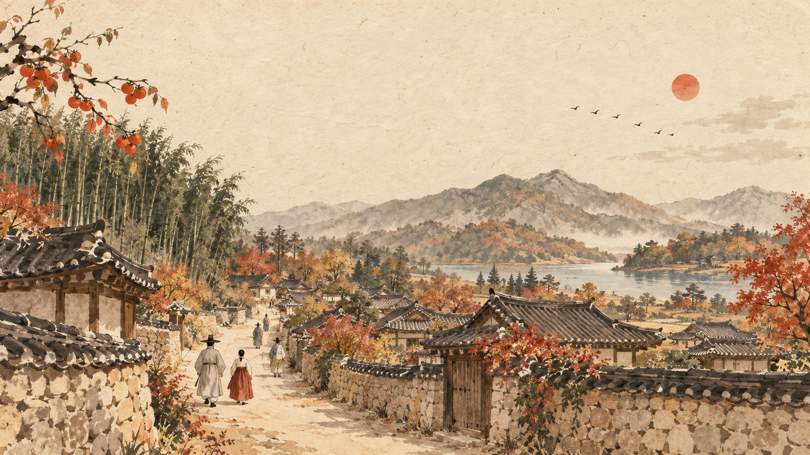
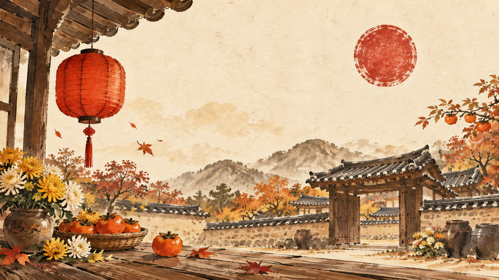

퇴로고가마을을 한 바퀴 돌며 추노꾼·어우동·광년이를 찾습니다. 앱이 다음 자리를 지도로 알려주고, 미션을 통과하면 도장이 찍힙니다. 다섯 도장을 모으면 행운의 룰렛이 돌아갑니다.
2026 백중마을 축제 · 10.10(토)–10.11(일) 10:00–17:00
주최·주관 밀양문화관광재단
오늘 애쓴 당신께 백중의 복을 나눕니다. 룰렛을 눌러 돌려 보세요.

2026 백중마을 축제 · 밀양문화관광재단
위치 확인 중…